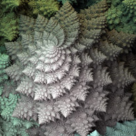

MatrixComposition
This page demonstrates the basics of scripting shapes RenderMan scene description (rib) protocol. Writing rib files by hand focuses attention on the use of color, opacity and the fundamental concepts related to xyz coordinate system.